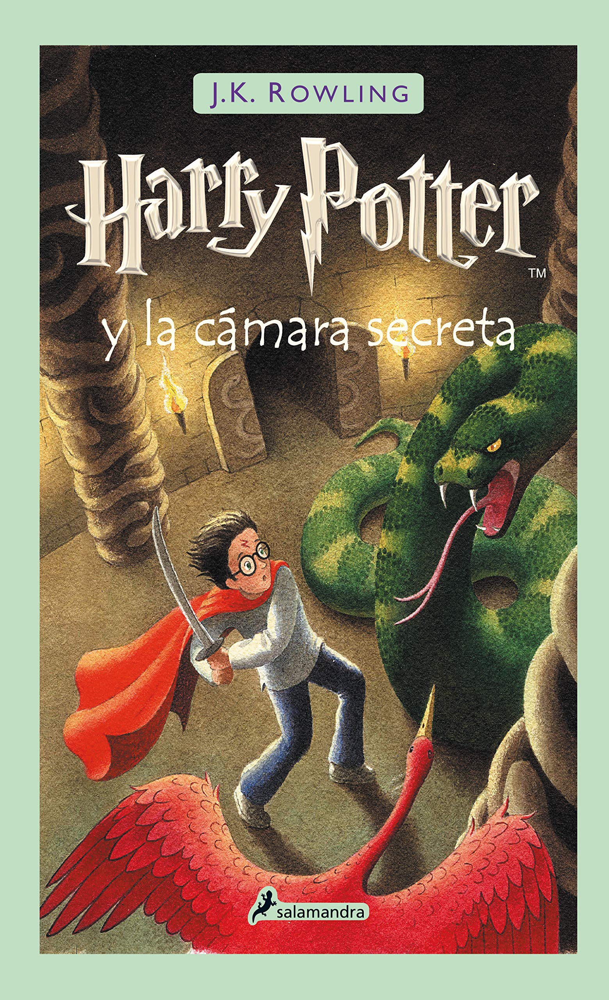
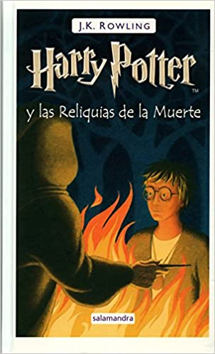

Harry Potter y La Piedra Filosofal
 Harry Potter se ha quedado huérfano y vive en casa de sus abominables tíos y del insoportable primo Dudley. Harry se siente muy triste y solo, hasta que un buen día recibe una carta que cambiará su vida para siempre.
Harry Potter se ha quedado huérfano y vive en casa de sus abominables tíos y del insoportable primo Dudley. Harry se siente muy triste y solo, hasta que un buen día recibe una carta que cambiará su vida para siempre.
Harry Potter y la Camara Secreta
 Tras derrotar una vez más a lord Voldemort, su siniestro enemigo en Harry Potter y la piedra filosofal, Harry espera impaciente en casa de sus insoportables tíos el inicio del segundo curso del Colegio Hogwarts de Magia y Hechicería.
Leer "Harry Potter y la Carmara Secreta"Harry Potter y el Prisionero de Azkaban
 El tercer año de estudios de Harry en Hogwarts se ve amenazado por la fuga de Sirius Black de la prisión de Azkaban. Al parecer, se trata de un peligroso mago que fue cómplice de Lord Voldemort y que intentará vengarse de Harry Potter.
El tercer año de estudios de Harry en Hogwarts se ve amenazado por la fuga de Sirius Black de la prisión de Azkaban. Al parecer, se trata de un peligroso mago que fue cómplice de Lord Voldemort y que intentará vengarse de Harry Potter.
Harry Potter y el Caliz de Fuego
Hogwarts se prepara para el Torneo de los Tres Magos, en el que competirán tres escuelas de hechicería. Para sorpresa de todos, Harry Potter es elegido para participar en la competencia, en la que deberá luchar contra dragones, internarse en el agua y enfrentarse a sus mayores miedos..
Leer "Harry Potter y el Caliz de Fuego"Harry Potter y el Misterio del Principe
Harry descubre un poderoso libro y, mientras trata de descubrir sus orígenes, colabora con Dumbledore en la búsqueda de una serie de objetos mágicos que ayudarán en la destrucción de Lord Voldemort.
Leer "Harry Potter y el Mistrio del Principe"Harry Potter y la Orden del Fenix
En su quinto año en Hogwarts, Harry descubre que muchos integrantes de la comunidad de magos no conocen la verdad acerca de su encuentro con Lord Voldemort. Cornelius Fudge, ministro de magia, designa a Dolores Umbridge como maestra de defensa contra de las artes oscuras porque cree que el profesor Dumbledore planea apoderarse de su trabajo. Pero sus enseñanzas son inadecuadas, por lo que Harry prepara a los estudiantes para defender la escuela en contra del mal.
Leer "Harry Potter y la Orden del Fenix"Harry Potter y las Reliquias de la Muerte
 Harry, Ron y Hermione se marchan de Hogwarts para iniciar su misión más importante: tienen que destruir los horrocruxes, el secreto del poder y la inmortalidad de Voldemort, en los que el temido mago oscuro guarda los fragmentos de su alma.
Leer "Harry Potter y las Reliquias de la Muerte"